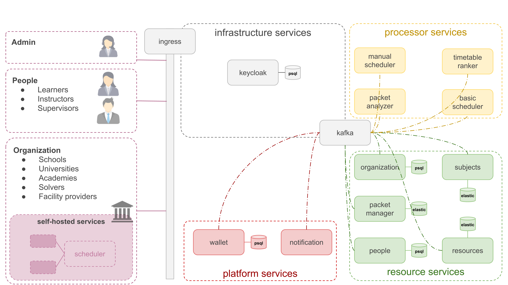

Introduction
The Distributed Timetable Assistant (DiTA) is a decentralized platform designed to revolutionize educational scheduling. By moving away from traditional, centralized algorithms, DiTA empowers institutions, instructors, and learners to collaboratively build optimized timetables.
Instead of a single bottleneck, DiTA uses a network of independent Solver Services that compete to solve scheduling problems defined by Institution Packets. This approach ensures scalability, fairness, and the ability to handle complex, real-world constraints that centralized systems often miss.
For a deeper dive into how DiTA works, see the Overview.
Overview
The Challenge
Educational scheduling is inherently complex. It involves balancing the needs of multiple stakeholders—institutions, instructors, supervisors, and learners—against limited resources like classrooms and labs. Traditional centralized systems often struggle with this complexity, leading to rigid schedules that fail to accommodate individual preferences or adapt to changes.
The DiTA Solution
The Distributed Timetable Assistant (DiTA) addresses these challenges through decentralization. It creates a marketplace where scheduling problems are matched with independent solvers.
Key Concepts
- Institution Packets: Structured data units where organizations define their participants, courses, constraints, and resources.
- Solver Services: Independent microservices (human or automated) that propose timetable solutions.
- Marketplace: The ecosystem where packets are published and solutions are traded.
Unique Features
1. Open Ecosystem
DiTA is not just for schools. It is a platform where anyone can register and manage resources.
- Participants: Teachers, students, supervisors.
- Facilities: Schools, universities, gyms, laboratories, and more.
- Sharing: Users can share their availability or resources (e.g., a lab renting out empty slots) with the entire network.
2. Hybrid Resource Management
Institutions can define resources in a flexible, hybrid manner:
- Dedicated: Use your own private list of teachers and rooms.
- Shared: Request resources from the public pool.
- Conditional: Define rules like "If our internal math teachers are fully booked, request a certified math teacher from the platform." This applies to all resource types—instructors, classrooms, or even specific equipment.
3. A Hub for Academic Research
Educational timetabling is a vibrant field of research, with dedicated conferences like PATAT (Practice and Theory of Automated Timetabling) and international competitions (ITC). DiTA provides a perfect real-world testbed for researchers:
- Real Data: Researchers can test their algorithms on real-world constraints and data (anonymized if needed).
- Benchmarking: The marketplace acts as a live benchmark where new algorithms can compete against existing ones.
- Implementation: Students and academics can publish their solvers as microservices, moving their work from theoretical papers to practical application.
How It Works (The User Journey)
- Definition: An institution defines its requirements (courses, teachers, rooms) and bundles them into an Institution Packet.
- Submission: The packet is submitted to the DiTA network.
- Discovery: Independent Solver Services discover the packet and analyze its complexity.
- Solving: Solvers generate proposed timetables, optimizing for constraints and preferences.
- Evaluation: The system scores proposals based on quality, fairness, and rule satisfaction.
- Selection: The institution selects the best solution, and the winning solver is rewarded.
This process allows for iterative improvement, where schedules can be refined over time to achieve the best possible outcome for everyone involved.

Design
The Distributed Timetable Assistant (DiTA) design focuses on extensibility, fairness, and reactive evaluation. It provides the abstract mechanisms that enable the marketplace described in the Overview.

Core Mechanisms
1. The Marketplace
The marketplace is the decoupling layer between Institutions (demand) and Solvers (supply). It ensures that:
- Discovery: Solvers can find problems that match their capabilities.
- Transparency: All transactions and evaluations are verifiable.
- Competition: Multiple solvers can attempt the same problem, driving up solution quality.
2. Reactive Evaluation & Scoring
DiTA employs a reactive scoring model. Solution scores are not static; they adjust based on the changing state of resources.
- Dynamic Scoring: If a resource (e.g., a specific lab) becomes overbooked globally, solutions relying on it may see their scores drop in real-time.
- Fairness: The system penalizes conflicts and rewards efficient resource usage proportionally.
3. Extensibility
The platform is designed to evolve without breaking existing contracts:
- Reward Models: New ways to incentivize solvers (e.g., tokens, reputation) can be plugged in.
- Gamification: Leaderboards and challenges can be added to the solver layer.
- Pluggable Validators: Institutions can add custom validation logic for their specific constraints.
4. Flexible Processing & Privacy
The system supports various processing models to suit different privacy and security needs:
- Self-Hosted Processing: Institutions can run their own solver services to keep data entirely within their infrastructure.
- Conditional Processing: Requests can be routed to specific solvers that meet certain criteria (e.g., "only trusted partners").
- Anonymized Processing: Data can be passed through an anonymization layer before reaching public solvers. The results are transparently de-anonymized upon return, allowing the community to solve the problem without seeing sensitive identity data.
Design Principles
| Principle | Description |
|---|---|
| Decentralization | Logic is distributed; no single central scheduler controls the outcome. |
| Transparency | Evaluation rules and rewards are clear to all participants. |
| Reactivity | The system adapts to state changes in real-time. |
| Scalability | Adding more solvers linearly increases the system's problem-solving capacity. |
Institution Packet
The Institution Packet defines the complete structure and data for an institution within the DITA system. It serves as the root configuration that encompasses all aspects of an institution's scheduling and resource management, including availabilities, facilities, learners, instructors, and more.
Components
The Institution Packet is composed of several aggregates, each responsible for a specific domain of the institution's data:
- Availabilities: Defines time ranges and availability status for scheduling (e.g., term dates, daily schedules, holidays).
- Facilities: Physical spaces such as classrooms, labs, and conference halls.
- Learners: Individuals enrolled in courses.
- Instructors: Individuals responsible for teaching courses.
- Supervisors: Individuals who manage facilities or other resources.
- Resources: Educational materials like books and equipment.
- Subjects: Standard educational topics (e.g., "Physics 101").
- Courses: Scheduled offerings of subjects.
- Units: Organizational units like departments or schools.
Example
Below is an example of a complete Institution Packet configuration in YAML format.
apiVersion: apps/v1
kind: InstitutionPacket
name: Brisbane Central Primary School
address:
availabilities: # Availability define specific time ranges along with availability status for scheduling purposes.
- action: Add # Add, Remove
add-type: WeeklyPeriod # DailyPeriod, WeeklyPeriod, MonthlyPeriod, YearlyPeriod, Blocks, Block
first-day-of-week: Monday # Sunday, Monday, Tuesday, Wednesday, Thursday, Friday, Saturday
time-cells:
- action: Add # Add, Remove
add-type: DailyPeriod
rules: []
time-cells:
# Session 1: 09:00 - 10:40
- action: Add # Add, Remove
add-type: Block
start: 09:00
end: 10:40
status: Available # Available, Unavailable, Preferred, Undesired
rules: []
# Break 1: 10:40 - 11:25 (Excluded)
# Session 2: 11:30 - 13:00
- action: Add # Add, Remove
add-type: Block
start: 11:30
end: 13:00
status: Available # Available, Unavailable, Preferred, Undesired
rules: []
# Break 2: 13:00 - 13:30 (Excluded)
# Session 3: 13:30 - 15:00
- action: Add # Add, Remove
add-type: Block
start: 13:30
end: 15:00
status: Available # Available, Unavailable, Preferred, Undesired
rules: []
start: Monday
end: Friday
start: 2025-01-28T00:00:00+10:00
end: 2025-12-12T23:59:59+10:00
- action: Remove # Add, Remove
remove-type: Holidays
country: "au-qld"
start: 2025-01-28T00:00:00+10:00
end: 2025-12-12T23:59:59+10:00
facilities: # Facilities represent physical spaces such as classrooms, labs, gyms, or conference halls that can be scheduled for use.
learners: # Learners are individuals who enroll in courses to receive training or education.
instructors: # Instructors are individuals responsible for teaching and guiding learners in one or more courses.
supervisors: # Individuals assigned to supervise or manage the facility.
resources: # Resources are educational materials such as books, videos, or documents linked to subjects.
subjects: # Subjects define standard educational topics such as “Physics 2” that can be taught across multiple courses.
courses: # Courses are scheduled offerings of a subject, typically linked to a specific instructor and academy.
units: # Organizational units such as schools, departments, or training centers, each with their own scheduling and resources.
- name: Primary Years
address:
availabilities:
facilities:
learners:
instructors:
supervisors:
resources:
subjects:
courses:
Availabilities
Availabilities define specific time ranges along with availability status for scheduling purposes. This system allows for complex scheduling rules including recurring patterns, specific date ranges, and exception handling (like holidays).
Structure
An availability entry consists of a hierarchical structure of time definitions.
Top-Level Fields
- action: The operation to perform.
Add: Adds availability for the specified period.Remove: Removes availability (e.g., for holidays or exceptions).
- add-type (for
Addaction): Defines the scope of the addition.WeeklyPeriod: A recurring weekly pattern.DailyPeriod: A recurring daily pattern.MonthlyPeriod: A recurring monthly pattern.YearlyPeriod: A recurring yearly pattern.Blocks: A collection of specific time blocks.Block: A single specific time block.
- remove-type (for
Removeaction): Defines the scope of removal.Holidays: Removes time based on public holidays for a specific region.
- start: The start date/time of the availability period (ISO 8601 format).
- end: The end date/time of the availability period (ISO 8601 format).
- country (for
Holidays): The country code (e.g., "ir", "au-qld") to fetch public holidays for.
Time Cells
Time cells are nested units that define the granularity of the schedule.
- action:
AddorRemove. - add-type: The type of time cell (e.g.,
DailyPeriod,Block). - start: Start constraint for the cell (e.g.,
08:00,Monday). - end: End constraint for the cell.
- status: The availability status for this slot.
Available: The time is free to be booked.Unavailable: The time cannot be booked.Preferred: The time is preferred for booking.Undesired: The time is not preferred but can be used if necessary.
- rules: A list of specific constraints or behaviors (optional).
Examples
Brisbane Middle School Schedule
This example demonstrates a school schedule for a middle school in Brisbane, Australia.
- Days: Monday to Friday.
- Hours: 08:30 to 15:10.
- Structure: 6 periods with 2 breaks (Morning Tea and Lunch).
- Term: Term 1 (Jan 28) to Term 4 (Dec 12) for 2025.
- Holidays: Queensland public holidays are excluded.
availabilities:
# Define the main school term schedule for 2025
- action: Add
add-type: WeeklyPeriod
first-day-of-week: Monday
start: 2025-01-28T00:00:00+10:00 # Start of Term 1
end: 2025-12-12T23:59:59+10:00 # End of Term 4
time-cells:
- action: Add
add-type: DailyPeriod
start: Monday
end: Friday
time-cells:
# Period 1: 08:30 - 09:20
- action: Add
add-type: Block
start: 08:30
end: 09:20
status: Available
rules: []
# Period 2: 09:20 - 10:10
- action: Add
add-type: Block
start: 09:20
end: 10:10
status: Available
rules: []
# Break 1 (Morning Tea): 10:10 - 10:40 (Excluded)
# Period 3: 10:40 - 11:30
- action: Add
add-type: Block
start: 10:40
end: 11:30
status: Available
rules: []
# Period 4: 11:30 - 12:20
- action: Add
add-type: Block
start: 11:30
end: 12:20
status: Available
rules: []
# Consolidation: 12:20 - 13:00
- action: Add
add-type: Block
start: 12:20
end: 13:00
status: Available
rules: []
# Break 2 (Lunch): 13:00 - 13:30 (Excluded)
# Period 5: 13:30 - 14:20
- action: Add
add-type: Block
start: 13:30
end: 14:20
status: Available
rules: []
# Period 6: 14:20 - 15:10
- action: Add
add-type: Block
start: 14:20
end: 15:10
status: Available
rules: []
# Remove Queensland Public Holidays
- action: Remove
remove-type: Holidays
country: "au-qld"
start: 2025-01-28T00:00:00+10:00
end: 2025-12-12T23:59:59+10:00
Facilities
Facilities represent physical spaces such as classrooms, labs, gyms, or conference halls that can be scheduled for use.
Learners
Learners are individuals who enroll in courses to receive training or education.
Instructors
Instructors are individuals responsible for teaching and guiding learners in one or more courses.
Supervisors
Individuals assigned to supervise or manage the facility.
Resources
Resources are educational materials such as books, videos, or documents linked to subjects.
Subjects
Subjects define standard educational topics such as “Physics 2” that can be taught across multiple courses.
Courses
Courses are scheduled offerings of a subject, typically linked to a specific instructor and academy.
Units
Organizational units such as schools, departments, or training centers, each with their own scheduling and resources.
Architecture
The DiTA platform is built as a set of Kubernetes-native microservices. It enforces a clear separation between data management (Resources), logic (Processors), and platform utilities.
Deployment Flexibility:
- Full Self-Hosting: The entire platform can be deployed on-premise for complete control.
- Hybrid: Use the public cloud for some services (e.g., the marketplace) while keeping sensitive Resource Services self-hosted.
- Service-Level: Individual services can be swapped or hosted independently.
Key Tech Stack:
- Communication: Kafka (Event Bus), gRPC/REST.
- State: PostgreSQL (Relational), Elasticsearch (Search/Index), Redis (Cache/Ephemeral).
- Identity: Keycloak.

Service Groups
1. Resource Services (The "Truth")
These services manage the canonical domain data. They are the source of truth for the system.
packet-manager: Manages submission packets and their lifecycle. Uses Elasticsearch for high-performance search.people: Manages profiles (instructors, students) and availability.organization: Manages school/university metadata.resources: Manages physical assets (rooms, equipment).subjects: Manages curriculum and subject definitions.
2. Processor Services (The "Workers")
These services consume events and perform heavy lifting.
basic-scheduler: An automated solver that generates timetables. Uses Redis for job queues.manual-scheduler: Supports human-in-the-loop editing.packet-analyzer: Extracts features (complexity, constraints) from packets to guide solvers.timetable-ranker: Stream processor that scores incoming solutions.
3. Platform & Infrastructure
wallet: Manages credits and transactions (Cloud-exclusive).notification: Handles alerts and messages.kafka: The central nervous system. All services publish/subscribe to domain events here.ingress: Handles routing and load balancing.
Technical Interaction Flow
The system relies on an Event-Driven Architecture:
- Ingestion: API calls to Resource Services emit events (e.g.,
packet.created) to Kafka. - Processing: Processor Services (like
basic-scheduler) subscribe to these topics. - Result Publication: Processors publish results (e.g.,
candidate.created) back to Kafka. - Aggregation: Analytics services (
timetable-ranker) consume result streams to update scores in real-time.
Development
This section contains technical decisions and service implementations.
The technical development guide is available at: eg.dita.hasankarimi.ir
License
The Distributed Timetable Assistant (DiTA) project, including its source code, design, documentation, and conceptual framework, is the exclusive intellectual property of its owner.
No part of this project — including but not limited to the ideas, algorithms, architectural design, or implementation details — may be copied, reproduced, modified, distributed, or utilized in any form, whether commercial or non-commercial, without explicit prior written permission from the owner.
Unauthorized use, replication, or distribution of any component of this project constitutes a violation of intellectual property rights and may lead to legal action.
© 2025 DiTA Project. All Rights Reserved.